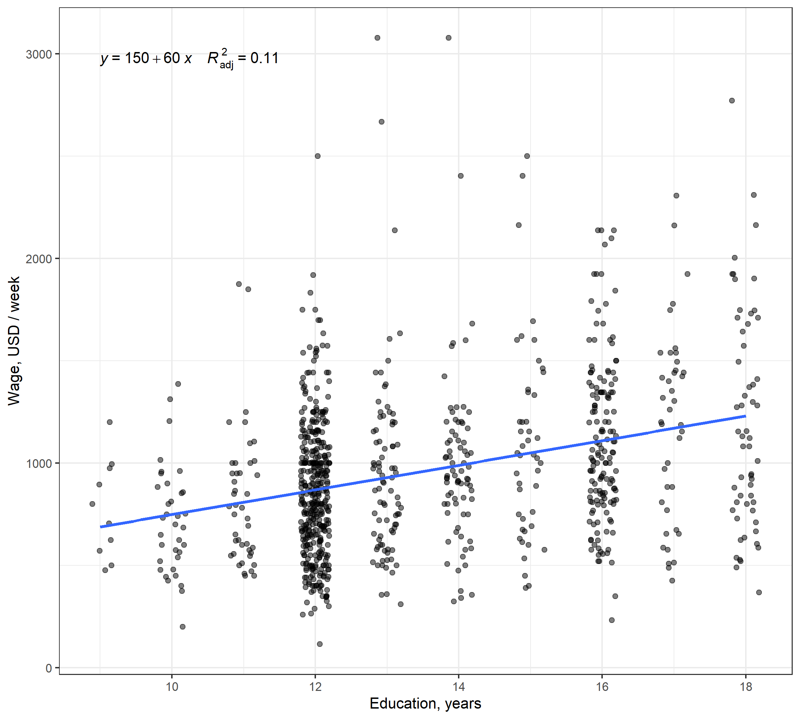

Multiple Linear Regression: practical aspects
Eduard Bukin
Recap
Recap: Ceteris Paribus
Fill in page 1 here: bit.ly/41R1YpL
Recap: Multiple regression
Fill in page 2 here: bit.ly/41R1YpL
Where does the regression equation come from?
We do not make regression equations because we like how they look.
We base them on theory:
- on economic theory as well as underlining natural and biological processes.
Here is one of many examples: Hedonic Model
Hedonic Model
To understand where the regression equation comes from, let us follow an example of:
Hedonic Model
- Any idea what this is?
Hedonic Model overview
Hedonic prices is an econometric approach of quantifying monetary values of differentiated characteristics (\(x_i\)) of goods and services, which are subjects of economic exchange (and stochastic variation \(u\)).
\[ \text{Price} = f(x_1, x_2, \cdots , x_i, u) \]
For example, agricultural land has such characteristics as: …
Land quality (location, slope, soil salinity, nutrient content, irrigation availability, rainfall, climate) environmental limitation, farmers’ accessibility, and other.
Hedonic equation is based on the theory that takes its roots to supply and demand.
Supply and demand theory: a structural approach
Demand function:
\[Q_{t}^D = \alpha_0 + \alpha_1 P_t + u_{1t}, \;\; \text{with} \; \alpha_1 < 0\]
Supply function:
\[Q_{t}^S = \beta_0 + \beta_1 P_t + u_{2t}, \;\; \text{with} \; \beta_1 >0\]
Equilibrium condition:
\[ Q_{t}^S = Q_{t}^D \]
Hedonic land prices model
Relies on the partial equilibrium framework (Palmquist, 1989), where
- \(R(\cdot)\) - realized land price (rental of sales), are modeled from two sides:
Supply
- Land owner whats to maximize own profit from renting land out.
- Owner’s offer function:
\[ \phi(\hat{z}, \tilde{z}, \pi^{S^{'}}, r, \beta) \]
\(\hat{z}\) - land characteristics exogenous to land owner;
\(\tilde{z}\) - land characteristics in control of land owner;
Demand
- Farmer whats to maximize agricultural profit from land
- Farmer’s bid function”
\[ \pi^{S^{'}} + C(\hat{z}, \tilde{z}, r, \beta) \]
\(r\) - inputs prices;
\(\beta\) - technologies and opportunities such as credit availability;
\(\pi^{S^{'}}\) - expected profit of agricultural producers from land;
Structural model of the realized prices
Supply-demand equilibrium:
\[\phi(\hat{z}, \tilde{z}, \pi^{S^{'}}, r, \beta) = R = \pi^{S^{'}} + C(\hat{z}, \tilde{z}, r, \beta)\]
Observed prices \(R\) are the equilibrium between bid and offer (demand and supply).
This is called a Structural Model
Econometric modell
To explain causes behind price changes, we can deconstruct structural model into reduced form equations, which can be estimated:
Reduced form supply side
\[ R = \phi(\hat{z}, \tilde{z}, \pi^{S^{'}}, r, \beta) + e \]
Reduced form demand side
\[ R = \pi^{S^{'}} + C(\hat{z}, \tilde{z}, r, \beta) + e \]
When we run a hedonic prices model
\[R = R(\hat{z}, \tilde{z}, \pi^{S^{'}}, r, \beta)\]
we estimate one of the reduced forms and select independent variables based on the hedonic prices theory (differentiated land qualities).
Relevance of the theory
- Theory provides a rationale behind causal relationship
\[R = R(\hat{z}, \tilde{z}, \pi^{S^{'}}, r, \beta)\]
- Theory suggests a functional form.
- Theory stipulates the dependent variable.
Theory specifies key determinants of the outcome:
- AKA what our regressors/independnet variables.
What are the differentiated land characteristics?
In \(R = R(\hat{z}, \tilde{z}, \pi^{S^{'}}, r, \beta)\), what are these independent and dependent variables?
\(\tilde{z}\) Affected by land owner:
- To enroll for subsidies or not.
- To install irrigation or not.
- Fertilize land
- Improve the landscape
\(\hat{z}\) Not affected by land owner:
- Weather
- Location
- Restrictions
Example of a hedonic land prices model: 03c-hedonic-land-prices.Rmd.
Problem
We would like to assess the effect of the “Conservation Reserve Program” (CPR) on the agricultural land prices in Minnesota in 2002-2011.
Conservation Reserve Program
- is a subsidy
- obligates farms NOT TO GROW ANY CROPS on the enrolled land
- pays monetary compensation in exchange;
Regression equation
\[ \log (\text{acrePrice}) = \beta_0 + \beta_1 \text{crpPct} + \log(\beta_2 \text{acres}) + \beta_3 \text{region} \\ + \beta_4 \text{year} + \beta_4 \text{tillable} + \beta_5 \text{productivity} + \beta_6 \text{improvements} + e \]
acrePrice- sale price in dollars per acre;acres- size of the farm in acres;region- region in the state Minnesota;year- year of the land sales translation;crpPct- the percentage of all farm acres enrolled in CRP;tillable- percentage of farm acreage that is rated arable by the assessor;productivity- average agronomic productivity scaled 1 to 100, with larger numbers for more productive land;improvements- percentage of property value due to improvements (infrastructure)
Regression results
| log(Price per acre) | log(Price per acre) | |
|---|---|---|
| Intercept | 6.099 *** (0.051) | 6.507 *** (0.034) |
| Subsidy (0|1) | -0.00370 *** (0.00027) | -0.00488 *** (0.00017) |
| Area (log), acres | -0.0587 *** (0.0058) | -0.0913 *** (0.0051) |
| Tillable area, % (0-100) | 0.00421 *** (0.00036) | 0.00550 *** (0.00018) |
| Improvements, (0-100) | 0.01567 *** (0.00062) | 0.01414 *** (0.00033) |
| Productivity, (0-100) | 0.0094 *** (0.0004) | |
| West Central (0|1) | 0.633 *** (0.016) | 0.746 *** (0.011) |
| Central (0|1) | 0.885 *** (0.018) | 1.041 *** (0.013) |
| South West (0|1) | 0.734 *** (0.016) | 1.019 *** (0.011) |
| South Central (0|1) | 0.854 *** (0.017) | 1.191 *** (0.011) |
| South East (0|1) | 0.897 *** (0.018) | 1.234 *** (0.012) |
| Num.Obs. | 8770 | 17441 |
| R2 Adj. | 0.700 | 0.646 |
Note: ^^ Year-specific dummy variables are omitted. Heteroscedasticity consistent standard errors are reported in parentheses. P-values are coded as: * p=0.05, ** p=0.01, *** p<0.001
Goodness of fit: \(R^2\) adjusted
Shows the share of variance explained by a model adjusted to the number of independent variables.
If the number of independent variables increases, but variables do not explain \(y\) better, \(R^2\) adjusted could shrink to 0 or a negative number.
We generally want to have it as high as possible, however!
\(R^2\) adjusted has nothing to do with the coefficients’ significance and their causal meaning.
If the goal of regression is to explain causes, rather than predict outcomes, \(R^2\) adjusted has not much relevance.
Practical example
Base on (Ashenfelter, Ashmore, & Lalonde, 1995)
What makes wine so expensive?
Let us summarize the causes of wine prices
Any guesses?
Weather
Any unobserved characteristics?
- Art of the winemaker
- Storage
- Way of drinking
Let us see what regression tells us about wine
\[ Price = \beta_0 + \beta_1 \text{Age} + \beta_2 \text{AGST} + \beta_3 \text{HarvestRain} + \beta_4 \text{WinterRain} + e \]
What are our expectations about signs of \(\beta\) s?
Variable
Price: average market price for Bordeaux vintages according to a series of auctions (USD). The price is relative to the price of the 1961 vintage, regarded as the best one ever recorded.WinterRain: winter rainfall (in mm).AGST: Average Growing Season Temperature (in Celsius degrees).HarvestRain: harvest rainfall (in mm).Age: age of the wine, measured in 1983 as the number of years stored in a cask.
Let us regress wine in the class
Exercise:
03-wine-regression.Rmd
Multiple Linear Regression
“Regression is the tool that masters pick up first, if only to provide a benchmark for more elaborate empirical strategies.” (Angrist & Pischke, 2014)
Why regression?
“… regression estimates are weighted averages of multiple matched comparisons of the sort constructed for the groups in our stylized matching matrix.” (Angrist & Pischke, 2014)
Wage ~ Education: equation
\[ Y_i = \alpha + \beta \, P_i + e_i, \]
where:
\(Y_i\) is wage in Euro per week
\(P_i\) is education in years
\(\alpha\) is the intercept
\(\beta\) is the slope or causal effect of interest
Wage ~ Education.
Causal directed acyclic graph.
Relationship

Interpret the effect of education on wage.
Is this a causal effect on education on wage?
- Explain why?
Wage ~ Education: Is there a ceteris paribus?
Regression accounts for the observed (included) confounders by attributing variance in \(y\) to the variance in \(x\) (variable of interest) and \(u\) (control variables).
Why regression?
- In multiple regression, Ceteris Paribus is achieved by introducing control variables (\(A_i\)).
\[ Y_i = \alpha + \beta \, P_i + \gamma \, A_i + e_i, \]
Regression controls the variance in \(Y_i\) with observed \(P_i\) and \(A_i\).
In the context of the variable of interest (\(P_i\)):
Regression controls other variables (\(A_i\)) fixed,
ensuring that \(\beta\) reviels causal effect Ceteris Paribus.
Wage ~ Education: Really? Is there a ceteris paribus?
Not every confounded could be observed or measures.
There are unobserved ones:
- …
- Ability, attitude, effort.
When a confounded correlated with outcome \(Cov(c,y) \ne 0\) and other regressors \(Cov(c,u) \ne 0\) and \(Cov(c,x) \ne 0\).
Estimates of \(\beta\) and \(\gamma\) are no longer ceteris paribus!
- They are biased: \(\tilde{\beta}\) and \(\tilde{\gamma}\)
Selection bias in regression analysis
Absence of the Ceteris Paribus in a regression is called omitted variable bias
OVB: The long model
Supposed that our ideal regression
- the true model / population regression / long model is:
\[ Y_i = \alpha ^ l + \beta ^ l P_i + \gamma A_i + e^l_i, \]
We cannot measure \(A_i\), but:
- \(A_i\) has a causal effect on \(Y_i\): \((E[Y_i|A_i] \ne 0)\), and
- \(A_i\) correlated with \(P_i\): \((E[P_i|A_i] \ne 0)\):
OVB: The short model
Because of the omitted variable,
we cannot estimate the long model.
Instead, we estimate a short model:
\[ Y_i = \alpha ^ s + \beta^s P_i + e^s_i \]
where omitted variable is implicit in the residuals:
\[ e^s_i = e^l_i + A_i \]
Bias of variable omission
Omitted variable causes bias of all estimates!
This bias can be measured as \(\text{OVB}\):
\[ \text{OVB} = \beta^s - \beta^l \]
To be continued on the OVB in another week
How does regression fights selection bias?
Any ideas?
Any ideas?
We include control variables to reduce or defeat the omitted variable bias.
Wage ~ Education example
Introduction
See Wooldridge (2020)
We use data from (Blackburn and Neumark, 1992) on wage determinants. Variables present are:
- \(wage\) - monthly earnings in USD;
- \(educ\) - years of education;
- \(exper\) - years of experiences;
- \(black\) - dummy variable representing individuals which are not Caucasian;
- \(female\) - dummy variable representing females;
Our goal is to identify the causal effect of education on wage estimating following equation:
\[ \text{wage} = \beta_0 + \beta_1 \text{educ} + \beta_2 \text{exper} + \beta_3 \text{black} + \beta_4 \text{female} + e \]
Loading data
Rows: 526
Columns: 7
$ wage <dbl> 3.10, 3.24, 3.00, 6.00, 5.30, 8.75, 11.25, 5.00, 3.60, 18.18…
$ educ <dbl> 11, 12, 11, 8, 12, 16, 18, 12, 12, 17, 16, 13, 12, 12, 12, 1…
$ exper <dbl> 2, 22, 2, 44, 7, 9, 15, 5, 26, 22, 8, 3, 15, 18, 31, 14, 10,…
$ black <dbl> 0, 0, 0, 0, 0, 0, 0, 0, 0, 0, 0, 0, 0, 0, 0, 0, 0, 0, 0, 0, …
$ white <dbl> 1, 1, 1, 1, 1, 1, 1, 1, 1, 1, 1, 1, 1, 1, 1, 1, 1, 1, 1, 1, …
$ female <dbl> 1, 1, 0, 0, 0, 0, 0, 1, 1, 0, 1, 1, 0, 0, 0, 0, 1, 1, 1, 1, …
$ caucasian <fct> yes, yes, yes, yes, yes, yes, yes, yes, yes, yes, yes, yes, …Exploratory data analysis (1/3)
| Unique (#) | Missing (%) | Mean | SD | Min | Median | Max | |
|---|---|---|---|---|---|---|---|
| wage | 241 | 0 | 5.9 | 3.7 | 0.5 | 4.7 | 25.0 |
| educ | 18 | 0 | 12.6 | 2.8 | 0.0 | 12.0 | 18.0 |
| exper | 51 | 0 | 17.0 | 13.6 | 1.0 | 13.5 | 51.0 |
| black | 2 | 0 | 0.1 | 0.3 | 0.0 | 0.0 | 1.0 |
| white | 2 | 0 | 0.9 | 0.3 | 0.0 | 1.0 | 1.0 |
| female | 2 | 0 | 0.5 | 0.5 | 0.0 | 0.0 | 1.0 |
Exploratory data analysis (2/3)
Exploratory data analysis (3/3)

Estimating regression
Call:
lm(formula = wage ~ educ + exper + black + female, data = wage_dta)
Coefficients:
(Intercept) educ exper black female
-1.71453 0.60175 0.06422 -0.08389 -2.15649 Interpreting the results (1)
Call:
lm(formula = wage ~ educ + exper + black + female, data = wage_dta)
Residuals:
Min 1Q Median 3Q Max
-6.3666 -1.9740 -0.4936 1.1248 14.8123
Coefficients:
Estimate Std. Error t value Pr(>|t|)
(Intercept) -1.71453 0.76169 -2.251 0.0248 *
educ 0.60175 0.05135 11.718 < 2e-16 ***
exper 0.06422 0.01041 6.168 1.39e-09 ***
black -0.08389 0.44430 -0.189 0.8503
female -2.15649 0.27060 -7.969 1.01e-14 ***
---
Signif. codes: 0 '***' 0.001 '**' 0.01 '*' 0.05 '.' 0.1 ' ' 1
Residual standard error: 3.081 on 521 degrees of freedom
Multiple R-squared: 0.3094, Adjusted R-squared: 0.304
F-statistic: 58.34 on 4 and 521 DF, p-value: < 2.2e-16Interpreting the results (2): fancy summary
| Model 1 | |
|---|---|
| (Intercept) | -1.715 (0.762)* |
| educ | 0.602 (0.051)*** |
| exper | 0.064 (0.010)*** |
| black | -0.084 (0.444) |
| female | -2.156 (0.271)*** |
| Num.Obs. | 526 |
| R2 Adj. | 0.304 |
| F | 58.341 |
Interpreting the results (3): Effect of a dummy variables
# Predicted values of wage
educ | Predicted | 95% CI
---------------------------------
0 | -1.66 | [-2.96, -0.37]
3 | 0.14 | [-0.86, 1.14]
5 | 1.35 | [ 0.54, 2.15]
7 | 2.55 | [ 1.93, 3.17]
10 | 4.35 | [ 3.99, 4.72]
12 | 5.56 | [ 5.29, 5.83]
14 | 6.76 | [ 6.46, 7.06]
18 | 9.17 | [ 8.56, 9.78]
Adjusted for:
* exper = 17.02
* black = 0.10
* female = 0.48# Predicted values of wage
# female = 0
educ | Predicted | 95% CI
---------------------------------
0 | -0.63 | [-1.97, 0.71]
4 | 1.78 | [ 0.82, 2.74]
7 | 3.58 | [ 2.89, 4.27]
10 | 5.39 | [ 4.92, 5.85]
12 | 6.59 | [ 6.22, 6.96]
18 | 10.20 | [ 9.57, 10.84]
# female = 1
educ | Predicted | 95% CI
---------------------------------
0 | -2.79 | [-4.08, -1.49]
4 | -0.38 | [-1.30, 0.54]
7 | 1.43 | [ 0.77, 2.08]
10 | 3.23 | [ 2.79, 3.67]
12 | 4.43 | [ 4.05, 4.82]
18 | 8.04 | [ 7.35, 8.73]
Adjusted for:
* exper = 17.02
* black = 0.10Conclude
Is model 1 a good predictor of wage based on education?
Is the effect of education causal?
| Model 1 | |
|---|---|
| (Intercept) | -1.715 (0.762)* |
| educ | 0.602 (0.051)*** |
| exper | 0.064 (0.010)*** |
| black | -0.084 (0.444) |
| female | -2.156 (0.271)*** |
| Num.Obs. | 526 |
| R2 Adj. | 0.304 |
| F | 58.341 |
Elasticity
Elasticity is a unit-less measure of change in one variable as a result of a change in the other.
Elasticity
Elasticity of \(y\) with response to \(x\) (\(x\) elasticity of \(y\)):
\[ \epsilon = \frac{\partial y / y}{\partial x / x} = \frac{\partial y}{\partial x} \frac{x}{y} \]
\[ \epsilon = \frac{ \frac{y_2 - y_1}{y_1} }{ \frac{x_2 - x_1}{x_1}} \]
Elasticity in a linear model
\[ \text{wage} = \beta_0 + \beta_1 \text{educ} + \beta_2 \text{exper} + \beta_3 \text{black} + e \]
Let us compute elasticity of \(\text{wage}\) in response to \(\text{educ}\):
\[ \epsilon_{\text{wage},\text{educ}} = \frac{\partial y}{\partial x} \frac{x}{y}, \]
where: \(\beta_1 = \frac{\partial y}{\partial x}\)
Therefore, elasticity of wage depends on on the value of \(x\) and \(y\).
When elasticity depends on a valued of another variable, we evaluate it at mean (or other quantiles) values of these variables.
Eslimating elasticity in a linear model (1/2)
| wage | educ | |
|---|---|---|
| mean | 5.90 | 12.56 |
| q2 | 3.33 | 12.00 |
| median | 4.65 | 12.00 |
| q4 | 6.88 | 14.00 |

Eslimating elasticity in a linear model (1/2)

Elasticity at mean:
Elasticity at 2nd, 3rd and 4th quartiles:
Regression assumptions
Go to the page 2 to refresh motivation for regression assumptions
Asymptotic properties of the OLS (simplified)
OLS results with consistent (unbiased) and efficient estimates of population parameters when sample size is finite (\(n \rightarrow \infty\))
\(\hat \beta \rightarrow \beta\)
\(Var(\hat \beta) \rightarrow 0\)
When the sample size is finite and all Gauss-Markov assumptions are satisfied:
\(\hat \beta\) - estimates vary from sample to sample, but
\(Var(\hat \beta)\) is distributed according to the
t- distribution.Variances of two estimates \(Var(\hat \beta_1)\) and \(Var(\hat \beta_2)\) are distributed according to the
F- distribution.
When GM assumptions are not satisfied:
tandFdistributions are no longer relevant and we cannot perform conduct inference.
Linearity
Linearity: meaning
the expected value of a dependent variable is a straight-line function of the independent variable
If linearity is violated:
estimates are biased
inappropriate representation of the dependent variable
Linearity: detection
How to detect a non-linearity?
no accepted statistical tests, but
the visual inspection
Typical plots:
Scatter plots of dependent and independent variables;
observed versus predicted/fitted values;
residuals versus predicted/fitted values;
Linearity: resolutions
(non) linear transformation to the dependent and/or independent variables;
- it does change the way how we must interpret coefficients;
find a different independent variable;
propose a different functional form;
Common linear transformations
Interaction term: \(y = \beta_0 + \beta_1 x_1 \cdot x_2 + \beta_2 x_3 + e\)
Natural logarithm: \(\log y = \beta_0 + \beta_2 \log x_1 + \beta_2 x_2 + \beta_3 \log x_3 + e\)
Power transformation and polynomial: \(y = \beta_0 + \beta_2 x_1 ^ 2 + \beta_2 x_2 ^ 3 + \beta_3 \sqrt x_3 + e\)
Box-Cox transformation.
Tailor expansion (Cobb-Douglas, Trans-log).
Reciprocal: \(\log y = \beta_0 + \beta_2 \frac{1}{x_1} + \beta_2 x_2 + \beta_3 \log x_3 + e\)
Standardized variables \(\frac{y - \bar y}{S_y} = \beta_0 + \beta_1 \frac{x_1 - \bar x_1}{S_{x_1}} + \beta_2 \frac{x_2 - \bar x_2}{S_{x_2}} + e\)
Log
| Model | Dep. var. | Indep. var. | Equation | Slope | Interpretation | Elasticity |
|---|---|---|---|---|---|---|
| \(\frac{\partial y}{\partial x}\) | \(\frac{\partial y}{\partial x} \cdot \frac{x}{y}\) | |||||
| Level - level | \(y\) | \(y\) | \(y=\beta_0 + \beta_1 x\) | \(\beta_1\) | \(\Delta y = \beta_1 \Delta x\) | \(\beta_1 \frac{x}{y}\) |
| Level - log | \(y\) | \(\log x\) | \(\log y=\beta_0 + \beta_1 x\) | \(\beta_1 y\) | \(\Delta y = (\beta_1/100)\% \Delta x\) | \(\beta_1 x\) |
| Log - level | \(\log y\) | \(x\) | \(y=\beta_0 + \beta_1 \log x\) | \(\beta_1 \frac{1}{x}\) | \(\% \Delta y = 100 \beta_1 \Delta x\) | \(\beta_1 \frac{1}{y}\) |
| Log - log | \(\log y\) | \(\log x\) | \(\log y=\beta_0 + \beta_1 \log x\) | \(\beta_1 \frac{y}{x}\) | \(\% \Delta y = \% \beta_1 \Delta x\) | \(\beta_1\) |
Log: Key limitations
\(\log(0) = - \infty\);
what is the \(\log(x)\), when \(x < 0\)?
Variables standardiztion to the standard normal distribution
| Model | Dep. var. | Indep. var. | Equation | Slope | Interpretation | Elasticity |
|---|---|---|---|---|---|---|
| \(\frac{\partial y}{\partial x}\) | \(\frac{\partial y}{\partial x} \cdot \frac{x}{y}\) | |||||
| Standardized variables | \(y^* = \frac{y - \bar y}{S_y}\) | \(x^* = \frac{x - \bar x}{S_x}\) | \(y^*=\beta_0 + \beta_1 x^*\) | \(\frac{\partial y^*}{\partial x^*}\) | \(\text{SD} \Delta y = \text{SD} \beta_1 \Delta x\) | DIY |
Key limitations:
- Not intuitive interpretation
Reciprocal
| Model | Dep. var. | Indep. var. | Equation | Slope | Elasticity |
|---|---|---|---|---|---|
| \(\frac{\partial y}{\partial x}\) | \(\frac{\partial y}{\partial x} \cdot \frac{x}{y}\) | ||||
| Reciprocal | \(y\) | \(\frac{1}{x}\) | \(y=\beta_0 + \beta_1 \frac{1}{x}\) | \(-\beta_1 \frac{1}{x^2}\) | \(-\beta_1 \frac{1}{xy}\) |
Interpretation:
- When \(x\) increases to infinity, \(y\) reaches asymptotically \(\beta_0\)
See Gujarati (2004) Chapter 6.7 for more details on interpreting the reciprocal relationship.
Linearity in the wage equation
Wage equaition update
Call:
lm(formula = log(wage) ~ educ + exper + black + female, data = wage_dta)
Coefficients:
(Intercept) educ exper black female
0.483188 0.091192 0.009411 -0.009889 -0.343712
Call:
lm(formula = log(wage) ~ educ + exper + black + female, data = wage_dta)
Residuals:
Min 1Q Median 3Q Max
-1.89689 -0.26333 -0.03394 0.26654 1.28131
Coefficients:
Estimate Std. Error t value Pr(>|t|)
(Intercept) 0.483188 0.106141 4.552 6.61e-06 ***
educ 0.091192 0.007156 12.743 < 2e-16 ***
exper 0.009411 0.001451 6.487 2.04e-10 ***
black -0.009889 0.061913 -0.160 0.873
female -0.343712 0.037709 -9.115 < 2e-16 ***
---
Signif. codes: 0 '***' 0.001 '**' 0.01 '*' 0.05 '.' 0.1 ' ' 1
Residual standard error: 0.4293 on 521 degrees of freedom
Multiple R-squared: 0.3526, Adjusted R-squared: 0.3476
F-statistic: 70.93 on 4 and 521 DF, p-value: < 2.2e-16Non-linearity change
Interpretation
| Model 1 (level-level) | Model 2 (log(wage)-level) | |
|---|---|---|
| (Intercept) | -1.715 (0.762)* | 0.483 (0.106)*** |
| educ | 0.602 (0.051)*** | 0.091 (0.007)*** |
| exper | 0.064 (0.010)*** | 0.009 (0.001)*** |
| black | -0.084 (0.444) | -0.010 (0.062) |
| female | -2.156 (0.271)*** | -0.344 (0.038)*** |
| Num.Obs. | 526 | 526 |
| R2 Adj. | 0.304 | 0.348 |
| F | 58.341 | 70.934 |
Perfect Collinearity
Collinearity or Muticollinearity
No collinearity means
- none of the regressors can be written as an exact linear combinations of some other regressors in the model.
For example:
- in \(Y = \beta_1 X_1 + \beta_2 X_2 + \beta_3 X_3\) ,
- where \(X_3 = X_2 + X_1\) ,
- all \(X\) are collinear.
Consequence of collinearity:
biased estimates of the collinear variables
over-significant results;
Detection of collinearity:
Scatter plot; Correlation matrix;
Model specification;
Step-wise regression approach;
Variance Inflation Factor;
Solution to collinearity:
Re specify the model;
Choose different regressors;
See also:
Overview: “Assumption AMLR.3 No Perfect Collinearity” in (Wooldridge, 2020) ;
Examples of causes in Chapter 9.5 (Wooldridge, 2020) ;
Chapter 9.4-9.5 in (weisberg2005a?);
Perfect collinearity with dummy variables
We want to build a naive regression, where the wage is a function of sex (female and male):
\(\text{wage} = \beta_0 + \beta_1 \cdot \text{female} + \beta_2 \cdot \text{male}\)
The data is fictional:
Rows: 14
Columns: 3
$ female <int> 1, 1, 0, 0, 1, 1, 1, 0, 0, 1, 1, 0, 1, 1
$ male <int> 0, 0, 1, 1, 0, 0, 0, 1, 1, 0, 0, 1, 0, 0
$ wage <dbl> 10.847522, 7.167989, 4.941890, 7.477957, 9.391538, 8.087289, 9.…Perfect collinearity with dummy variable (2)
| Model 1 | Model 2 | Model 3 | Model 4 | Model 5 | |
|---|---|---|---|---|---|
| (Intercept) | 8.747*** (0.468) | 6.094*** (0.628) | 6.094*** (0.628) | ||
| male | -2.652** (0.784) | 6.094*** (0.628) | 6.094*** (0.628) | ||
| female | 2.652** (0.784) | 2.652** (0.784) | 8.747*** (0.468) | 8.747*** (0.468) | |
| Num.Obs. | 14 | 14 | 14 | 14 | 14 |
| R2 | 0.488 | 0.488 | 0.488 | 0.974 | 0.974 |
| R2 Adj. | 0.446 | 0.446 | 0.446 | 0.969 | 0.969 |
Note: ^^ Model 1: wage ~ male
Model 2: wage ~ female
Model 3: wage ~ female + male
Model 4: wage ~ 0 + female + male
Model 5: wage ~ 0 + male + female
Perfect collinearity with dummy variable (2)
| Model 1 | Model 2 | Model 3 | |
|---|---|---|---|
| (Intercept) | 8.747*** (0.468) | 6.094*** (0.628) | 6.094*** (0.628) |
| male | -2.652** (0.784) | ||
| female | 2.652** (0.784) | 2.652** (0.784) | |
| Num.Obs. | 14 | 14 | 14 |
| R2 | 0.488 | 0.488 | 0.488 |
| R2 Adj. | 0.446 | 0.446 | 0.446 |
Note: ^^ Model 1: wage ~ male
Model 2: wage ~ female
Model 3: wage ~ female + male
Perfect collinearity with dummy variable (2)
| Model 1 | Model 2 | Model 3 | Model 4 | |
|---|---|---|---|---|
| (Intercept) | 8.747*** (0.468) | 6.094*** (0.628) | 6.094*** (0.628) | |
| male | -2.652** (0.784) | 6.094*** (0.628) | ||
| female | 2.652** (0.784) | 2.652** (0.784) | 8.747*** (0.468) | |
| Num.Obs. | 14 | 14 | 14 | 14 |
| R2 | 0.488 | 0.488 | 0.488 | 0.974 |
| R2 Adj. | 0.446 | 0.446 | 0.446 | 0.969 |
Note: ^^ Model 1: wage ~ male
Model 2: wage ~ female
Model 3: wage ~ female + male
Model 4: wage ~ 0 + female + male
Homeworks:
Homeworks:
Watch these videos on youtube and read
Video 1: Ceteris Paribus: Public vs. Private University or this link: https://youtu.be/iPBV3BlV7jk
Re watch video 2: Selection Bias or this link: https://youtu.be/6YrIDhaUQOE
Read:
(Angrist & Pischke, 2014, Chapter 2; optional Angrist & Pischke, 2009, Chapter 3)
Do:
Follow pre-recorded videos in the order below. Please note that slides below supplement some of those practical works.
- Ex.03a Regression basics
- Ex.03b Wage education
- Ex.03c Hedonic Land Prices Model
HW Slides for: Ex.03a Regression basics
HW03a Regression basics
\[ \pmb{y} = \pmb{x}\beta+\pmb{e} \]
where
\[ \pmb{e} = \pmb{y} - \pmb{x}\hat \beta \]
Dependent variable:
\[ \pmb{y} = \begin{bmatrix} y_1 \\ y_2 \\ \vdots \\ y_k \end{bmatrix} \]
Independent variables:
\[ \pmb{x} = \begin{bmatrix} 1 & x_{11} & x_{12} & \dots & x_{1n} \\ 1 & x_{21} & x_{22} & \dots & x_{2n} \\ \vdots & \vdots & \vdots & \ddots & \vdots \\ 1 & x_{k1} & x_{k2} & \dots& x_{kn} \\ \end{bmatrix} \]
\[ \hat \beta = \begin{bmatrix} \hat \beta_0 & \hat \beta_1 & \hat \beta_2 & \cdots & \hat \beta_n \end{bmatrix} \]
Where do \(\beta\) come from?
\[ \pmb{y} = \pmb{x}\hat\beta \]
\[ \pmb{x}^{T} \pmb{y} = \pmb{x}^{T} \pmb{x_i}\hat\beta \]
\[ \frac{1}{ \pmb{x}^{T} \pmb{x_i}} \pmb{x}^{T} \pmb{y} = \frac{1}{ \pmb{x}^{T} \pmb{x_i}}\pmb{x}^{T} \pmb{x_i}\hat\beta \]
\[ (\pmb{x}^{T} \pmb{x_i}) ^ {-1} \pmb{x}^{T} \pmb{y} = \hat\beta \]
where:
\(\pmb{x}^{T}\) is the transposed matrix \(\pmb{x}\)
\((\cdot) ^ {-1}\) is the inverse of a matrix
Fitted values
\[ \pmb{\hat y} = \pmb{x} \hat\beta = \begin{bmatrix} 1 & x_{11} & x_{12} & \dots & x_{1n} \\ 1 & x_{21} & x_{22} & \dots & x_{2n} \\ \vdots & \vdots & \vdots & \ddots & \vdots \\ 1 & x_{k1} & x_{k2} & \dots& x_{kn} \\ \end{bmatrix} \begin{bmatrix} \hat \beta_0 \\ \hat \beta_1 \\ \hat \beta_2 \\ \vdots \\ \hat \beta_n \end{bmatrix} = \]
\[ \begin{bmatrix} \beta_0 + \beta_1 x_{11} + \beta_2 x_{12} + \dots + \beta_n x_{1n} \\ \beta_0 + \beta_1 x_{21} + \beta_2 x_{22} + \dots + \beta_n x_{2n} \\ \vdots \\ \beta_0 + \beta_1 x_{k1} + \beta_2 x_{k2} + \dots + \beta_n x_{kn} \\ \end{bmatrix} = \begin{bmatrix} \hat y_1 \\ \hat y_2 \\ \vdots \\ \hat y_k \end{bmatrix} \]
Error terms
\[ \pmb{\hat e} = \pmb{y} - \pmb{\hat y} = \begin{bmatrix} y_1 - \hat y_1 \\ y_2 - \hat y_2 \\ \vdots \\ y_k - \hat y_k \end{bmatrix} = \begin{bmatrix} \hat e_1 \\ \hat e_2 \\ \vdots \\ \hat e_k \end{bmatrix} \]
Standard Errors
Measure of variance in the estimated parameters \(\beta\). Computed based on the Variance Covariance matrix
\[ Var(\hat \beta) = (\pmb{x}^T \pmb{x})^{-1} \hat \sigma_e \]
where \(\hat \sigma_e\) is the estimate of the variance in error terms:
\[ \hat \sigma_e = \frac{\pmb{\hat e}^T\pmb{\hat e}}{n-r} \]
\(n\) - number of observations and \(r\) number of regressors including intercept.
Standard Errors:
\[ \text{SE} = \sqrt{\text{diag}(Var(\hat \beta) )} \]
Why do we need standard errors?
SE are needed for the inference!
To conclude about the population based on the sample regression results.
Takeaways
Takeaways
Get comfortable with the terminology:
Control variables for creating Ceteris Paribus
Selection Bias in Regression:
OVB;
Long and Short models;
Regression components and how do one produce them:
- \(x\), \(y\), \(\beta\), standard errors.
Why assumptions are important?
Linearity and how to detect it?
- Log transformation and its interpretation.
What is perfect collinearity?